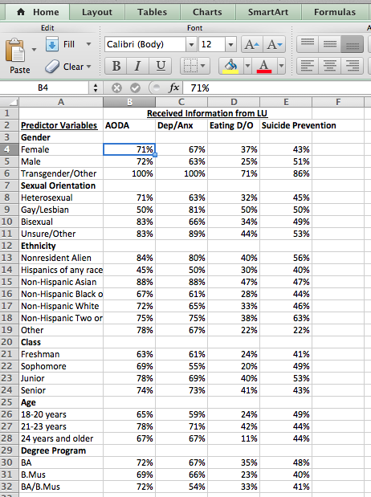
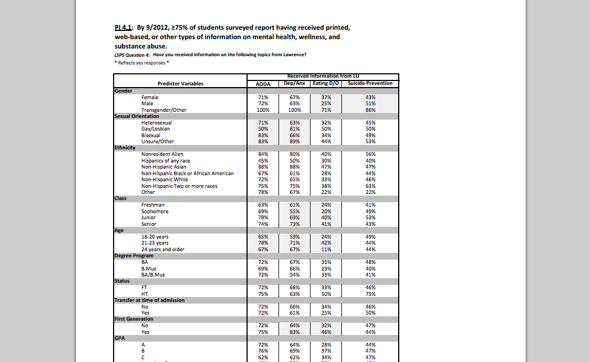
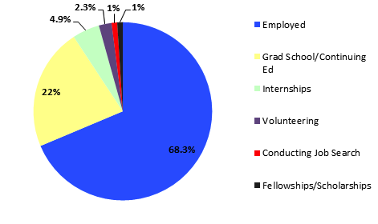
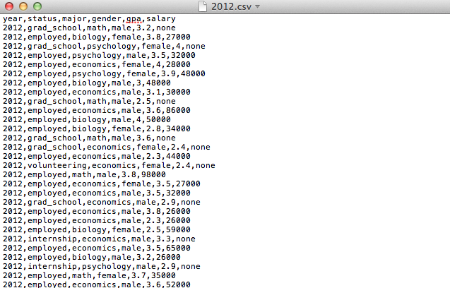
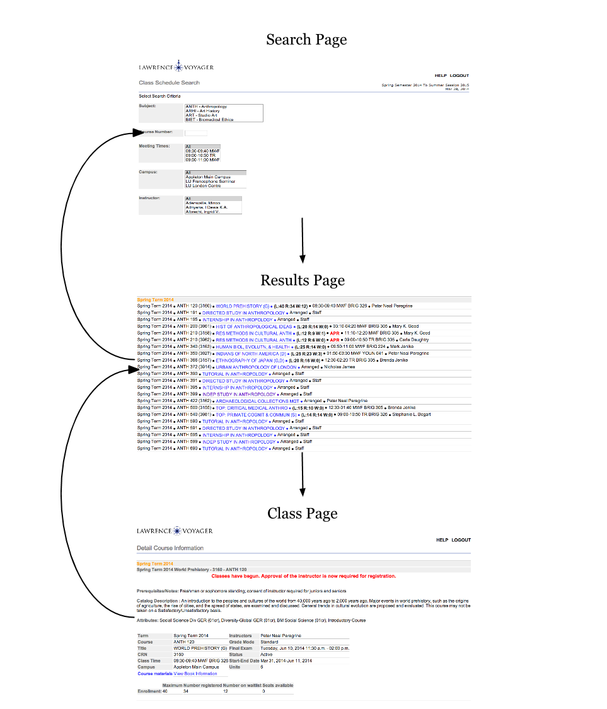

What universities do best is collect and categorize data. In this paper I assert that universities can create better infrastructure, engage students, and increase understanding by publishing their data in an open format. Finally, I outline clear steps for Lawrence to implement a successful open data policy.
A piece of data or content is open if anyone is free to use, reuse, and redistribute it - subject only, at most, to the requirement to attribute and/or share-alike.
- opendefinition.org
 - Machine Readable
The phrase open data has been thrown around, and it is a little difficult to pinpoint its meaning. In this essay my definition of open data is data that is published in a machine readable format where anyone is free to use, reuse, and redistribute it.
Machine readable data is in a format that can be understood by a computer. For example, a PDF is not machine readable because it can not be edited or understood by a computer. PDF's are for humans to read. An example of a machine readable format is an Excel spreadsheet. The spreadsheet data can be edited, manipulated, graphed, and exported.  - Human Readable
Open data in education solves two problems. First, Lawrence University collects an incredible amount of information, but it could improve the way it presents that information. Second, Lawrence’s technology infrastructure is often outdated, and frustrating for students.
The Lawrence University staff does an awesome job of collecting, and organizing information, but they don't specialize in communicating this information to students. Open data can leverage the awesome data collecting skills of the LU staff, and help present the data in a meaningful manner without adding much extra work. Below I provide examples of how open data can help improve the communication of information.
Lawrence surveys the graduates on what they are doing after college. The 2012 survey got 306 respondents out of 340 graduating students. The results of the survey are displayed below.*
 *Link to the source.
The information above might be helpful for a prospective or current Lawrence student, but it could be more helpful. A student viewing this chart might have some questions. For example, How does choice of major, gpa, extracurricular involvement, race, gender, ect. affect these outcomes? What are the trends over time? For employed students, how high are their salaries? Where are students going to graduate school?
Here are a few examples of what could be done by students if the Lawrence Graduate Survey data was released in an open format. I generated the data of around 300 fake students for each of the years 2012, 2011, 2010, and 2009*. *The program used to generate the students can be found here. I assumed that when surveyed the data collected was graduation year, status after graduation, major, gender, gpa, and if the student is employed their salary is collected. Below is a screenshot of the data stored in a CSV file. A CSV file can be loaded into, and exported from Excel and the majority of spreadsheet programs.

Below, we have a set of pie charts that represent the graduation outcome percentages for each major. A user can hover over the chart and a bar chart comparing the percentage of students in each major that have the selected graduating status will emerge.
With this chart a student can quickly discover information like: what major has the highest employment percentage? How does my current major compare to the average of all majors? What percentage of people in my major are going to graduate school? The example above provides a current or prospective student with more information to navigate their Lawrence experience successfully.
The data could also be used to create a scatter plot relating gpa to salary. We can mouse over major to highlight the data points for a specific major.
The scatter plot allows a student to determine how much a higher salary is related to gpa. The chart could be made even more informative by providing some form of statistical analysis. These are just examples to demonstrate the possibilities open data creates. There are many more exciting and informative ways to examine data a Lawrence. Next, I will look at how open data can help improve our course search.
Students use the course search to plan their schedules for the upcoming terms. The course search works, but it could be designed in a more effective manner. The two key issues with the course search are, in order to view courses many tabs must be opened up, and it is hard for the students to compare relevant course information. Below is the a typical workflow in the current LU course search.

A student must navigate these three pages, and restart in the beginning when they want to look at a new class. Meanwhile, students must keep track of conflicting class schedules on paper or in their head.
Opening the data behind the course search would enable any student to help create a better version. Below is an example of what the opened course search data might look like.
We can take this data and use it to build a better user interface for the course search. Below is an example of what a student could build.
COURSE SEARCH VIDEO
The example course search I designed has several advantages. First, It is all on one page. A student doesn’t have to navigate through loads of tabs to select their courses. Important information is highlighted. For example, classes that fulfill certain graduation requirements are displayed with colored badges. Additionally, students can add courses, and any course that conflicts with the added course will be displayed in red.
There are many other improvements a student could make to the course search. A student could create a mini calendar that shows the selected class times, or a course search that loads in degree information, and determines how close a student is to graduating. These are just a few examples of what a student could do if the course search information is opened.
There are several justifiable concerns associated with open data. One probable concern is that people will be able to use the data to damage Lawrence in some way. In reality, there is very little someone could do with the data I am suggesting should be opened. The data that will be opened is already available on the Lawrence website. It just isn’t presented in an editable format. The data being released is not sensitive. At worst a student could draw falsified conclusions using an edited version of the Lawrence data. Luckily, since the data will be freely available the false information can easily be disputed. Another possible concern is that opening the data at Lawrence will put a strain on the technical staff. My suggestions for implementation are designed to minimize the amount of work for Lawrence IT.
I recommend Lawrence choose a data format that is compatible with most programs, and easy to read. The simplest format to use for Lawrence appears to be CSV or Comma Separated Values. CSV files are supported by nearly all spreadsheet, and database programs, and it is human readable.
Lawrence can allow students to download a CSV file directly from their website, or they can post the data in a program that exports to CSV like Excel. I recommend Lawrence use Google Fusion Charts to distribute their data. Google Fusion Charts export to CSV, and have an interface very similar to Excel. The benefit of a Fusion Chart is Lawrence would only have to provide a link to the chart, and Google will host the data. In order to prevent the data from being tampered with, shared charts can be made read only. Students would be able to go to the Lawrence website, follow the link to the Fusion Chart, and download the data. Here is an example: link.
Here is a list of possible data sources that could be distributed via Google Fusion Charts:
Life After LU Data
Student Organization List
Lawrence Giving Development Report
Audited Financial Statements
Common Data Set
Lawrence University Profiles
Suicide Prevention Survey
Graduation Rates Disaggregated by Gender
List of required Lawrence Surveys
Teagle Tutorial
Distributing dynamic data will be slightly more difficult because it is updated more frequently. The most feasible solution for Lawrence will be to use the Google Documents API to dynamically load new data into a spreadsheet. The Google Documents API is a way for programs to control google spreadsheets. Lawrence would need to program their site to use the Google API to update the spreadsheet whenever data is updated. Using the the API will save the Lawrence IT Department the tedious busy work of manually posting the dynamic data updates.
List of possible dynamic data sources:
Course Search
LU Energy Usage
LU Calendar
We also have to increase our speed of change, right. We also have to rethink what is uniquely Lawrence.
- President Burstein
Lawrence should open a select few data sources as a pilot program. I recommend they release the data I used in the examples above. The class search data, and the graduation status data. I feel that these datasets are most interesting to students. Lawrence should also create a specific location on their website to distribute the data. If the pilot is a success, Lawrence can expand the program to other data sets.